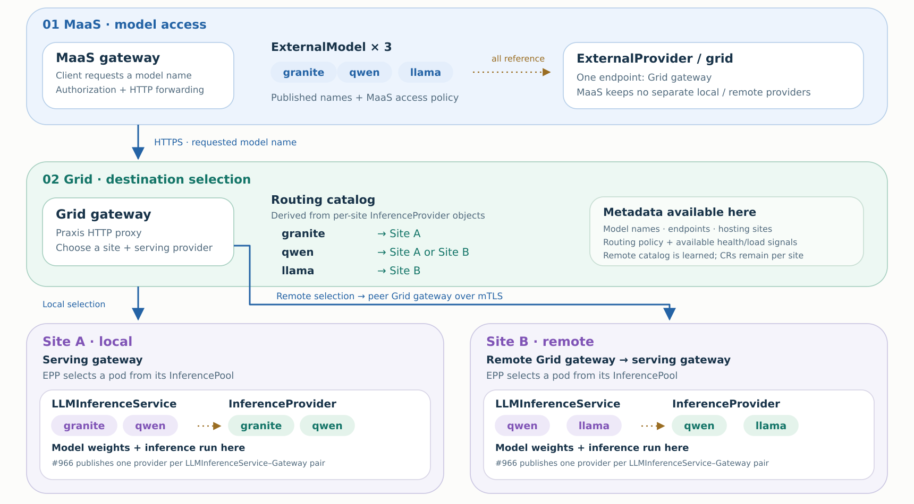
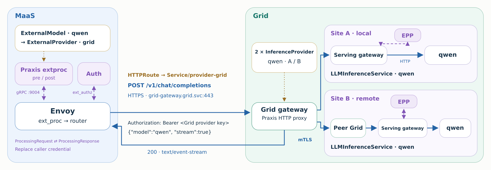

<!doctype html><html lang="en"><meta charset="utf-8"><meta name="viewport" content="width=device-width,initial-scale=1">
<title>MaaS · Praxis · Grid — architecture</title><style>
body{margin:0;background:#edf1f4;color:#183349;font:16px system-ui,sans-serif}nav{position:sticky;top:0;display:flex;gap:12px;padding:14px 24px;background:#ffffffee;box-shadow:0 1px 8px #18334918;align-items:center}nav strong{margin-right:auto}a,button{color:#2463a5;background:white;border:1px solid #b7cfe9;border-radius:18px;padding:8px 16px;text-decoration:none;cursor:pointer;font:inherit}button.active{background:#2463a5;color:white}main{max-width:1800px;margin:18px auto;padding:0 16px}figure{margin:0}img{width:100%;height:auto;display:block;border-radius:22px;box-shadow:0 5px 24px #18334914}[hidden]{display:none}footer{padding:18px 24px;color:#526b7e;font-size:14px}
</style><nav><strong>MaaS / Grid architecture</strong><button class="active" onclick="show(0)">1 · Model placement</button><button onclick="show(1)">2 · Networking close-up</button><a id="download" href="01-model-placement.svg" download>Download SVG</a></nav>
<main><figure></figure><figure hidden></figure></main>
<footer>Illustrative target architecture. Model aliases are granite, qwen and llama. Grid is the only MaaS provider for these models. Publication into Grid and registration into MaaS are separate operations. Model weights reside at serving sites. Sources: model-controller PR #966 at 7c4d60e3; AI Gateway controller at 55021648 plus the recorded Praxis configuration patch. Provider names and paths must follow KServe-reported status; aliases here simplify the view.</footer>
<script>function show(n){document.querySelectorAll('figure').forEach((e,i)=>e.hidden=i!==n);document.querySelectorAll('button').forEach((e,i)=>e.classList.toggle('active',i===n));document.querySelector('#download').href=['01-model-placement.svg','02-networking-closeup.svg'][n]}</script></html>